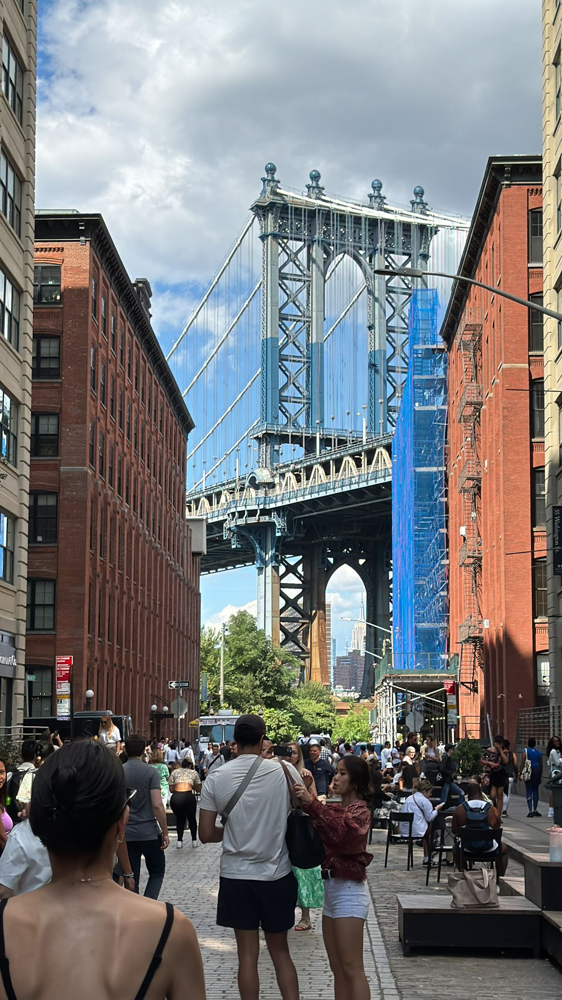

Which boroughs are the ones that issue more film permits in NYC?

Brooklyn bridge NYC Photo by: Maggie Morett
New York is everywhere in movies and tv series. All of the five boroughs have something special that makes them unique and recognizable. The City that Never Sleeps is portrayed through images on the screen that show Times Square, the Empire State, parks, restaurants, bridges and subways. However, to film it is necessary to have a permit issued by The New York City Mayor’s Office of Media and Entertainment (MOME). In films the most common visual reference is Manhattan and also it is the area that issues more permits.The graph “Shooting permits by Borough” shows that Manhattan is the place in which more permits are issued and overall, TV is the most common media in these locations: Manhattan, Brooklyn, Queens and Bronx, just in Staten Island this changes to film. The chart “Manhattan shooting permits by medium”, reveals that shooting for television is the highest media (1429) and it almost triples the second place which is commercial (425).
Manhattan shooting permits by medium. Chart:Maggie Morett. Source:Film Permits NYC Open Data. Film database
Shooting permits by Borough. Chart:Maggie Morett. Source:Film Permits NYC Open Data. Film database